8 Integration with sO2PLS
Now that the omics datasets have been appropriately pre-processed and pre-filtered, we are ready to perform the actual data integration step. In this chapter, we will show how to perform multi-omics data integration with the sO2PLS method (Gu et al. (2021) ) from the OmicsPLS package (Bouhaddani et al. (2018) ).
As a reminder, here is what the _targets.R script should look like so far:
_targets.R script
library(targets)
library(tarchetypes)
library(moiraine)
tar_option_set(
packages = c(
"moiraine",
"MOFA2",
"mixOmics",
"readr",
"tibble",
"tidyr",
"dplyr",
"ggplot2",
"patchwork"
)
)
list(
# Importing data ---------------------------------------------------------------
## Data import using a target factory
import_dataset_csv_factory(
files = c(
system.file("extdata/genomics_dataset.csv", package = "moiraine"),
system.file("extdata/transcriptomics_dataset.csv", package = "moiraine"),
system.file("extdata/metabolomics_dataset.csv", package = "moiraine")
),
col_ids = c("marker", "gene_id", "sample_id"),
features_as_rowss = c(TRUE, TRUE, FALSE),
target_name_suffixes = c("geno", "transcripto", "metabo")
),
## Genomics features metadata file
tar_target(
fmetadata_file_geno,
system.file("extdata/genomics_features_info.csv", package = "moiraine"),
format = "file"
),
## Genomics features metadata import
tar_target(
fmetadata_geno,
import_fmetadata_csv(
fmetadata_file_geno,
col_id = "marker",
col_types = c("chromosome" = "c")
)
),
## Metabolomics features metadata import
import_fmetadata_csv_factory(
files = c(
system.file("extdata/metabolomics_features_info.csv", package = "moiraine")
),
col_ids = c("feature_id"),
target_name_suffixes = c("metabo")
),
## Transcriptomics features metadata import
import_fmetadata_gff_factory(
files = system.file("extdata/bos_taurus_gene_model.gff3", package = "moiraine"),
feature_types = "genes",
add_fieldss = c("Name", "description"),
target_name_suffixes = "transcripto"
),
## Samples metadata import
import_smetadata_csv_factory(
files = system.file("extdata/samples_info.csv", package = "moiraine"),
col_ids = "animal_id",
target_name_suffixes = "all"
),
## Creating omics sets for each dataset
create_omics_set_factory(
datasets = c(data_geno, data_transcripto, data_metabo),
omics_types = c("genomics", "transcriptomics", "metabolomics"),
features_metadatas = c(fmetadata_geno, fmetadata_transcripto, fmetadata_metabo),
samples_metadatas = c(smetadata_all, smetadata_all, smetadata_all)
),
## Creating the MultiDataSet object
tar_target(
mo_set,
create_multiomics_set(
list(set_geno,
set_transcripto,
set_metabo)
)
),
# Inspecting the `MultiDataSet` object -----------------------------------------
## Creating a density plot for each dataset
tar_target(
density_plots,
plot_density_data(
mo_set,
combined = FALSE,
scales = "free"
)
),
## Plotting the relationship between features mean and standard deviation
## for each dataset
tar_target(
mean_sd_plots,
plot_meansd_data(mo_set)
),
## Assessing missing values
tar_target(
n_missing_values,
check_missing_values(mo_set)
),
# Modifying the `MultiDataSet` object ------------------------------------------
## RNAseq differential expression results file
tar_target(
rnaseq_de_res_file,
system.file(
"extdata/transcriptomics_de_results.csv",
package = "moiraine"
),
format = "file"
),
## Reading the RNAseq differential expression results
tar_target(
rnaseq_de_res_df,
read_csv(rnaseq_de_res_file) |>
rename(feature_id = gene_id) |>
mutate(dataset = "rnaseq")
),
## Adding the differential expression results to the MultiDataSet object
tar_target(
mo_set_de,
add_features_metadata(mo_set, rnaseq_de_res_df)
),
# Data pre-processing ----------------------------------------------------------
## Applying transformations to the datasets
transformation_datasets_factory(
mo_set_de,
c("rnaseq" = "vst-deseq2",
"metabolome" = "logx"),
log_bases = 2,
pre_log_functions = zero_to_half_min,
transformed_data_name = "mo_set_transformed"
),
## Density plot for each transformed dataset
tar_target(
density_plots_transformed,
plot_density_data(
mo_set_transformed,
combined = FALSE,
scales = "free"
)
),
## Plotting the mean-SD trend for transformed each dataset
tar_target(
mean_sd_plots_transformed,
plot_meansd_data(mo_set_transformed)
),
## Summary table of the transformations applied
tar_target(
transformation_summary,
get_table_transformations(transformations_runs_list)
),
## Running a PCA on each dataset
pca_complete_data_factory(
mo_set_transformed,
complete_data_name = "mo_set_complete"
),
## PCA screeplots
tar_target(
pca_screeplots,
plot_screeplot_pca(pca_runs_list)
),
## PCA sample plots
tar_target(
pca_sample_plots,
plot_samples_coordinates_pca(
pca_runs_list,
datasets = "snps",
pcs = 1:3,
mo_data = mo_set_de,
colour_upper = "geno_comp_cluster",
shape_upper = "status",
colour_lower = "feedlot"
)
),
# Dataset pre-filtering --------------------------------------------------------
## Unsupervised feature selection based on MAD score
feature_preselection_mad_factory(
mo_set_complete,
to_keep_ns = c("snps" = 1000, "rnaseq" = 1000),
with_ties = TRUE,
filtered_set_target_name = "mo_presel_unsupervised"
),
## Diagnostic plot for MAD-based feature selection
tar_target(
preselection_mad_plot,
plot_feature_preselection_mad(individual_mad_values)
),
## Supervised feature selection based on bruising groups
feature_preselection_splsda_factory(
mo_set_complete,
group = "status",
to_keep_ns = c("snps" = 1000, "rnaseq" = 1000),
filtered_set_target_name = "mo_presel_supervised"
),
## Diagnostic plot for sPLS-DA based feature selection
tar_target(
preselection_splsda_plot,
plot_feature_preselection_splsda(individual_splsda_perf)
),
# Integration with sPLS --------------------------------------------------------
## Creating sPLS input
tar_target(
spls_input,
get_input_spls(
mo_presel_supervised,
mode = "canonical",
datasets = c("rnaseq", "metabolome")
)
),
## Initial PLS run with no feature selection and large number of components
tar_target(
spls_novarsel,
spls_run(
spls_input,
ncomp = 4
)
),
## Cross-validation for number of components
tar_target(
spls_perf_res,
mixOmics::perf(
spls_novarsel,
validation = "Mfold",
folds = 10,
nrepeat = 10,
cpus = 3
)
),
## Plotting cross-validation results (for number of components)
## Can try criterion = 'Q2.total', 'cor.tpred', 'cor.upred', 'RSS.tpred',
## 'RSS.upred' (but avoid 'RSS' and 'PRESS')
tar_target(
spls_perf_plot,
plot(spls_perf_res, criterion = "Q2.total")
),
## Selected value for ncomp
tar_target(
spls_optim_ncomp,
spls_get_optim_ncomp(spls_perf_res, min_ncomp = 2)
),
## Cross-validation for number of features to retain
tar_target(
spls_tune_res,
spls_tune(
spls_input,
ncomp = spls_optim_ncomp,
keepX = seq(10, 100, 10),
keepY = seq(10, 100, 10),
validation = "Mfold",
folds = 10,
nrepeat = 5,
measure = "cor",
cpus = 3
)
),
## Plotting cross-validation results (for number of features)
tar_target(
spls_tune_plot,
spls_plot_tune(spls_tune_res)
),
## Final sPLS run
tar_target(
spls_final_run,
spls_run(
spls_input,
ncomp = spls_optim_ncomp,
keepX = spls_tune_res$choice.keepX,
keepY = spls_tune_res$choice.keepY
)
)
)8.1 What is sO2PLS?
sO2PLS (for Sparse Orthogonal two-way Partial Least Squares) is a method for the unsupervised integration of two omics datasets. It aims at decomposing each of the two datasets into a joint part, which reflects covariation shared by the datasets, an orthogonal or specific part, which represents variation unique to each dataset, and a residual part. To this end, sets of joint and specific latent components are constructed for each dataset; these components are constructed as a linear combination of the features from the corresponding dataset. Feature selection is performed on the joint components of each dataset.
The joint latent components are constructed by maximising the covariance between the projection of each dataset onto their respective joint part. Sparsity is obtained by applying \(L_1\) regularisation (LASSO) to the feature joint loadings (i.e. their contribution to the joint components). However, no sparsity constraint is used on the feature loadings for the specific components. Joint and specific components are iteratively updated, with the datasets being corrected by removing the specific part before re-calculating the joint components. While the number of joint components is the same for the two datasets, each dataset can have a different number of specific components, including no specific component at all.
sO2PLS requires as input matrices of omics measurements obtained on the same samples. In addition, it assumes that the features have been centred. The method cannot handle missing values, so these should be imputed prior to using sO2PLS.
8.2 Creating the sO2PLs input
The first step is to transform the MultiDataSet object into a suitable format for the OmicsPLS package. This is done through the get_input_omicspls() function. The names of the two datasets to integrate are passed to the function through the datasets argument (in our case, we want to integrate the transcriptomics and metabolomics datasets). In the OmicsPLS terminology, the first dataset will be the X dataset, and the second will be the Y dataset. The function filters out samples that are not present in both datasets, and centres the features in each dataset. There is also the option to scale the datasets, through the scale_data argument (default behaviour is to not scale the data).
tar_target(
omicspls_input,
get_input_omicspls(
mo_presel_supervised,
datasets = c("rnaseq", "metabolome")
)
)The function returns a named list, where each element of the list is a matrix of measurements corresponding to one of the datasets to integrate, with samples as rows and features as columns:
tar_read(omicspls_input) |> str()
#> List of 2
#> $ rnaseq : num [1:139, 1:994] -0.39 -0.39 0.129 -0.39 0.376 ...
#> ..- attr(*, "dimnames")=List of 2
#> .. ..$ : chr [1:139] "R9497" "R5969" "R5327" "R5979" ...
#> .. ..$ : chr [1:994] "ENSBTAG00000000020" "ENSBTAG00000000046" "ENSBTAG00000000056" "ENSBTAG00000000061" ...
#> ..- attr(*, "scaled:center")= Named num [1:994] 3.88 7.44 10.14 4.75 12.64 ...
#> .. ..- attr(*, "names")= chr [1:994] "ENSBTAG00000000020" "ENSBTAG00000000046" "ENSBTAG00000000056" "ENSBTAG00000000061" ...
#> $ metabolome: num [1:139, 1:55] -0.142 -0.2204 0.1819 -0.2126 0.0643 ...
#> ..- attr(*, "dimnames")=List of 2
#> .. ..$ : chr [1:139] "R9497" "R5969" "R5327" "R5979" ...
#> .. ..$ : chr [1:55] "HMDB00001" "HMDB00008" "HMDB00042" "HMDB00043" ...
#> ..- attr(*, "scaled:center")= Named num [1:55] 3.539 4.68 8.468 6.998 0.918 ...
#> .. ..- attr(*, "names")= chr [1:55] "HMDB00001" "HMDB00008" "HMDB00042" "HMDB00043" ...Note that there are 139 samples in each matrix, which are the samples that are present in both datasets.
8.3 Choosing the number of latent components
In order to integrate the datasets with sO2PLS, it is necessary to set the number of joint and specific components that will be computed for each dataset. Within the sO2PLS framework, the number of joint components is denoted as \(n\) (it is the same value for both datasets), while \(n_x\) and \(n_y\) represent the number of specific components for the first and second dataset, respectively. \(n\) must be a positive integer (i.e. at least 1), but \(n_x\) and \(n_y\) can also be set to 0. Values for the number of joint and specific components can be estimated using cross-validation. The authors of the OmicsPLS package recommend a two-step approach, which is detailed below.
8.3.1 Adjusted cross-validation
In a first step, an adjusted cross-validation procedure is used to compute the optimal values for \(n\), \(n_x\) and \(n_y\). This is done through the so2pls_crossval_o2m_adjR2() function, which is a wrapper around the OmicsPLS::crossval_o2m_adjR2() function. Briefly, the function estimates, for each possible value of \(n\), the values of \(n_x\) and \(n_y\) that minimise the prediction error for the joint part of each dataset1. Using these values, it then computes the prediction error for the full dataset decomposition and uses it to select the optimal value of \(n\). Compared with the traditional cross-validation approach where the “full decomposition” prediction error is calculated for each possible combination of the tested parameter values, this adjusted procedure can be much faster, while often giving a very similar result. The authors recommend using it as a first pass to reduce the number of values to test for \(n\), \(n_x\) and \(n_y\).
In this example, we will test 1 to 5 joint components, and 0 to 10 specific components for each dataset (testing only even values). We use a 10-fold cross validation (nr_folds parameter specifying the number of folds to use for the cross-validation), and distribute the computation over 6 cores to reduce the running time (through the nr_cores argument). We will also set the seed to ensure the reproducibility of the results, through the seed argument.
tar_target(
so2pls_cv_adj,
so2pls_crossval_o2m_adjR2(
omicspls_input,
a = 1:5,
ax = seq(0, 10, by = 2),
ay = seq(0, 10, by = 2),
nr_folds = 10,
nr_cores = 6,
seed = 127
)
)In order to use the seed argument for the so2pls_crossval_o2m_adjR2, you need to be using the latest version of the OmicsPLS package from GitHub, which can be installed with devtools::install_github("selbouhaddani/OmicsPLS").
Despite using multiple cores, this function can take a while to run (this example took around 8 minutes to execute). The function returns a data-frame giving, for each tested value for \(n\), the values of \(n_x\) and \(n_y\) that yielded the lowest prediction error, as well as the prediction error obtained for these values of the parameters:
tar_load(so2pls_cv_adj)
so2pls_cv_adj
#> MSE n nx ny
#> 1 1.289030 1 0 4
#> 2 1.295734 2 2 10
#> 3 1.302705 3 2 10
#> 4 1.295478 4 4 10
#> 5 1.293570 5 4 10The prediction error obtained with each tested value of \(n\) can be visualised with the so2pls_plot_cv_adj() function, which takes as input the result from so2pls_crossval_o2m_adjR2():
so2pls_plot_cv_adj(so2pls_cv_adj)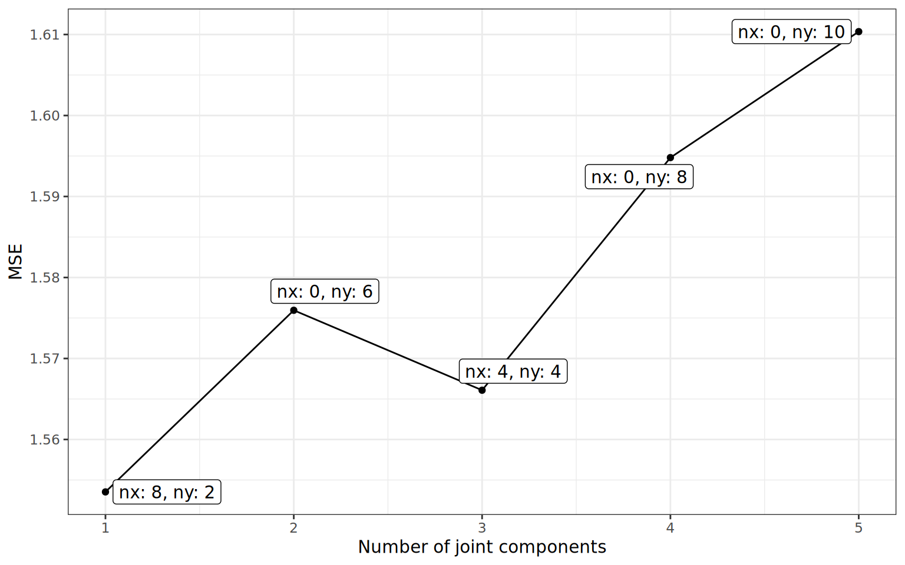
In the plot, The values of \(n_x\) and \(n_y\) chosen for each value of \(n\) are displayed next to each point. We can see that the smallest prediction error is obtained with one joint component.
In addition, the so2pls_get_optim_ncomp_adj() function returns the optimal values of \(n\), \(n_x\) and \(n_y\) from the output of the cross-validation step as a vector:
so2pls_get_optim_ncomp_adj(so2pls_cv_adj)
#> n nx ny
#> 1 0 48.3.2 Standard cross-validation
In a second step, a standard cross-validation approach is used to refine the results from the adjusted cross-validation step, by testing values around the selected \(n\), \(n_x\) and \(n_y\) values. Standard cross-validation is performed within the OmicsPLS package by the OmicsPLS::crossval_o2m() function. The function so2pls_crossval_o2m() is a convenient wrapper that takes as input the result from the adjusted cross-validation step, in order to automatically select which values should be tested for \(n\), \(n_x\) and \(n_y\).
Once again, we perform a 10-fold cross-validation, distributed over 6 cores:
tar_target(
so2pls_cv,
so2pls_crossval_o2m(
omicspls_input,
so2pls_cv_adj, ## result from the adjusted cross-validation
nr_folds = 10,
nr_cores = 6,
seed = 356
)
)This standard cross-validation step takes around 6 minutes to run, which makes sense as we are testing less values than in the previous step.
The result is a cvo2m object, which is a list containing the results of the cross-validation step as well as further information about the run. It can be visualised with the so2pls_plot_cv() function:
tar_load(so2pls_cv)
so2pls_plot_cv(so2pls_cv)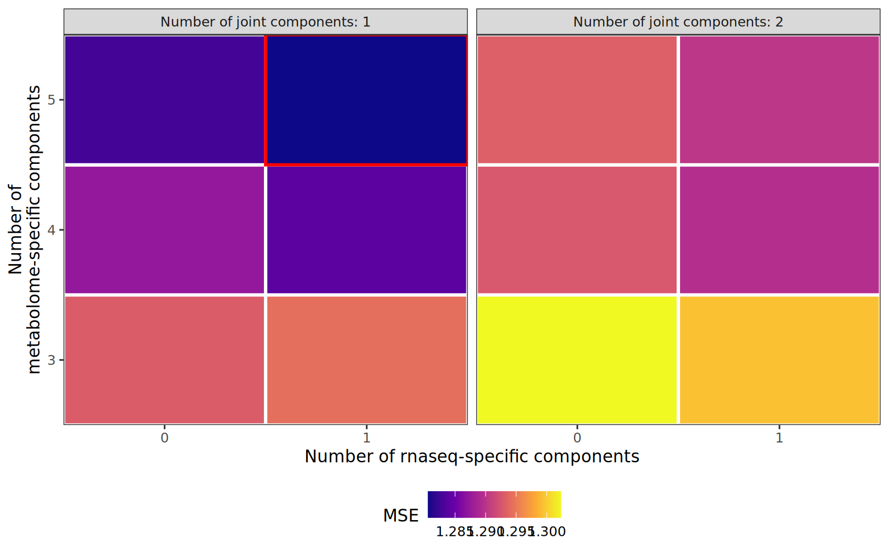
The plot displays, for each tested value of \(n\) (facets), the prediction error (MSE – colour) obtained for the tested values of \(n_x\) (x-axis) and \(n_y\) (y-axis). The combination of values yielding the smallest prediction error is highlighted in red. This optimal combination can be extracted from the results with the so2pls_get_optim_ncomp() function:
so2pls_get_optim_ncomp(so2pls_cv)
#> n nx ny
#> 1 1 5For convenience for the next steps of the analysis, we can store these values as a target:
tar_target(
so2pls_cv_res,
so2pls_get_optim_ncomp(so2pls_cv)
)8.4 Choosing the number of features to retain for the joint components
Once the number of joint and specific components to compute has been decided, we need to estimate the optimal number of features to retain from each dataset for each of the joint components (no feature selection is performed for the specific components). This is done through cross-validation, where the aim is to maximise the covariance between the joint components of the two datasets. This step is performed via the so2pls_crossval_sparsity() function (which is identical to the OmicsPLS::crossval_sparsity() function, except that all results from the cross-validation are returned, which is necessary for plotting purposes). The function takes as input the number of joint and specific components (n, nx and ny arguments), the number of folds to use for the cross-validation (nr_folds), and the values to test for each dataset (keepx_seq and keepy_seq arguments). For this example, we will test values between 5 and 100 for the rnaseq dataset, and between 5 and 40 for the metabolomics dataset:
tar_target(
so2pls_cv_sparsity,
so2pls_crossval_sparsity(
omicspls_input,
n = so2pls_cv_res['n'],
nx = so2pls_cv_res['nx'],
ny = so2pls_cv_res['ny'],
nr_folds = 10,
keepx_seq = c(seq(5, 30, 5), seq(40, 100, 10)),
keepy_seq = c(seq(5, 40, 5))
)
)The function returns a list containing the results of the cross-validation. They can be visualised with the so2pls_plot_cv_sparsity() function:
tar_load(so2pls_cv_sparsity)
so2pls_plot_cv_sparsity(so2pls_cv_sparsity)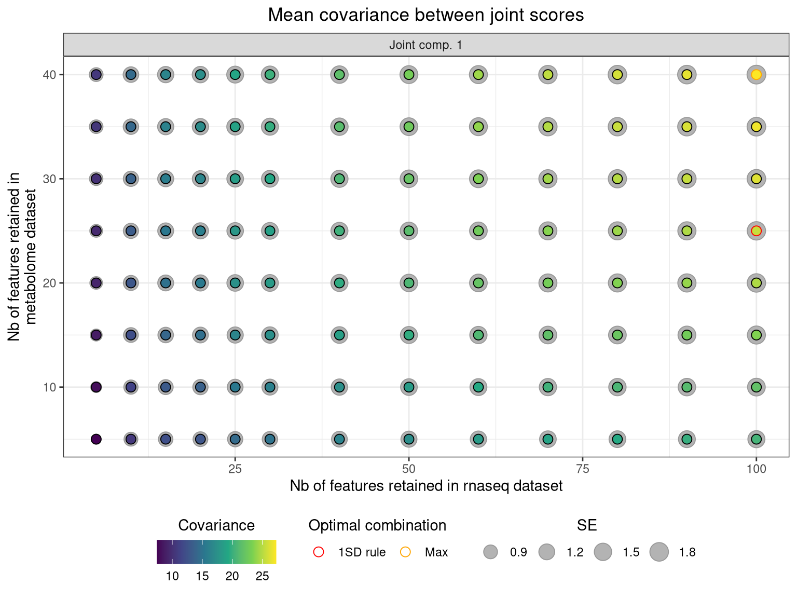
The plot depicts, for each joint component (facets – in this case there is only one), the average (colour) and standard deviation (gray area) of the covariance between the datasets’ joint components obtained for different number of features retained from the first (x-axis) and second (y-axis) dataset. The OmicsPLS package offers two options to select the optimal values to select for each latent component:
the maximum rule: the values that maximise the covariance between the datasets’ joint components are selected;
the 1 standard deviation rule: the smallest values (i.e. number of features) yielding a covariance within 1SD of the maximum covariance obtained for this latent component are selected.
In the plot, the values selected with the maximum rule are highlighted in orange, and the ones selected with the 1SD rule in red.
These optimal values can be extracted from the results of the cross-validation step with the so2pls_get_optim_keep() function. By default, the function uses the 1SD rule, but this can be disabled by setting the use_1sd_rule parameter to FALSE:
so2pls_get_optim_keep(so2pls_cv_sparsity)
#> $keepx
#> x_1sd
#> 100
#>
#> $keepy
#> y_1sd
#> 25
#>
#> attr(,"datasets_name")
#> [1] "rnaseq" "metabolome"
so2pls_get_optim_keep(so2pls_cv_sparsity, use_1sd_rule = FALSE)
#> $keepx
#> x
#> 100
#>
#> $keepy
#> y
#> 40
#>
#> attr(,"datasets_name")
#> [1] "rnaseq" "metabolome"The function returns a list of vectors, which are needed for the next step of the analysis. We will save these values as a target:
tar_target(
so2pls_cv_sparsity_res,
so2pls_get_optim_keep(so2pls_cv_sparsity)
)This list can be printed in a more reader-friendly way through the so2pls_print_cv_sparsity() function (which has been created mainly for reporting purposes), which returns a tibble containing the number of features to retain from each dataset for the different joint components:
so2pls_print_cv_sparsity(tar_read(so2pls_cv_sparsity_res))
#> # A tibble: 2 × 3
#> dataset `Joint component 1` Total
#> <chr> <dbl> <dbl>
#> 1 rnaseq 100 100
#> 2 metabolome 25 258.5 Final sO2PLS run
Once a value has been selected for all parameters, we can perform the final sO2PLS run. This can be done through the so2pls_o2m() function, which is a wrapper around the OmicsPLS::o2m() function. We’ll use the values selected from the different cross-validation steps to inform the parameter values:
tar_target(
so2pls_final_run,
so2pls_o2m(
omicspls_input,
so2pls_cv_res,
so2pls_cv_sparsity_res
)
)This function returns an o2m object, which, when printed, provides a summary of the sO2PLS results:
tar_load(so2pls_final_run)
so2pls_final_run
#> SO2PLS fit
#> with 1 joint components
#> and 1 orthogonal components in X
#> and 5 orthogonal components in Y
#> Elapsed time: 0.106 sec8.6 Results interpretation
In Chapter 11, we show the different functionalities implemented in the moiraine package that facilitate the interpretation of the results from an integration tool. In this section, we show some of the sO2PLS-specific plots that can be generated to help interpret the results of an sO2PLS run.
8.6.1 Variance explained
The summary() function, when applied to an sO2PLS output, provides an overview of the variance explained by the different latent components, as well as other summary statistics:
summary(so2pls_final_run)
#>
#> *** Summary of the SO2PLS fit ***
#>
#> - Call: OmicsPLS::o2m(X = omicspls_input[["rnaseq"]], Y = omicspls_input[["metabolome"]], n = 1, nx = 1, ny = 5, sparse = TRUE, keepx = c(100), keepy = c(25))
#>
#> - Modeled variation
#> -- Total variation:
#> in X: 72197.01
#> in Y: 4566.838
#>
#> -- Joint, Orthogonal and Noise as proportions:
#>
#> data X data Y
#> Joint 0.327 0.15
#> Orthogonal 0.123 0.33
#> Noise 0.550 0.52
#>
#> -- Predictable variation in Y-joint part by X-joint part:
#> Variation in T*B_T relative to U: 0.803
#> -- Predictable variation in X-joint part by Y-joint part:
#> Variation in U*B_U relative to T: 0.803
#>
#> -- Variances per component:
#>
#> Comp 1
#> X joint 23617.521
#> Y joint 684.163
#>
#> Comp 1
#> X Orth 8889.238
#>
#> Comp 1 Comp 2 Comp 3 Comp 4 Comp 5
#> Y Orth 490.457 350.282 279.931 276.203 171.812
#>
#>
#> - Coefficient in 'U = T B_T + H_U' model:
#> -- Diagonal elements of B_T =
#> 0.152These statistics can be visualised with the so2pls_plot_summary() function:
so2pls_plot_summary(so2pls_final_run)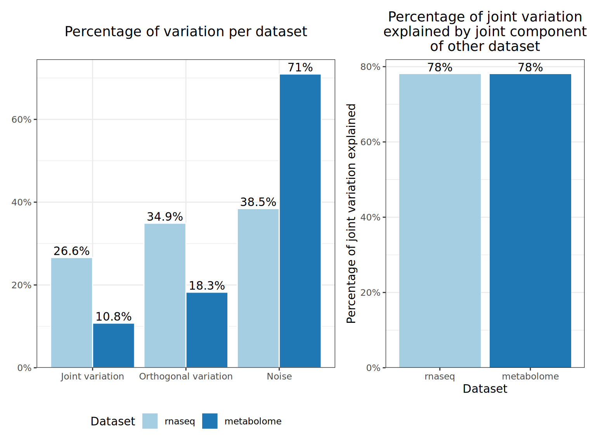
The plot on the left shows the percentage of variation explained by the joint, orthogonal/specific and residual parts for each dataset. In our example, the joint parts explain around 33% and 15% of the variation in the transcriptomics and metabolomics datasets, respectively, while the specific components explain around 12% and 33% of the variation in each dataset. Taken together, the joint and specific parts explain 45% of the variation present in the transcriptomics dataset and 48% in the metabolomics dataset. The plot on the right depicts the percentage of joint variation of a dataset explained by the joint variation of the other dataset, i.e. it gives an indication of how correlated the joint parts of the two datasets are. In our case, the joint part of each dataset explains between 80% of the joint variation in the other dataset, which is indicative of a good covariance between the datasets.
To get more information about the percentage of variation explained by each individual joint or specific component, we can have a look at the screeplot generated by the so2pls_screeplot() function, which shows the percentage of variance explained by each individual joint or specific component for each dataset:
so2pls_screeplot(so2pls_final_run)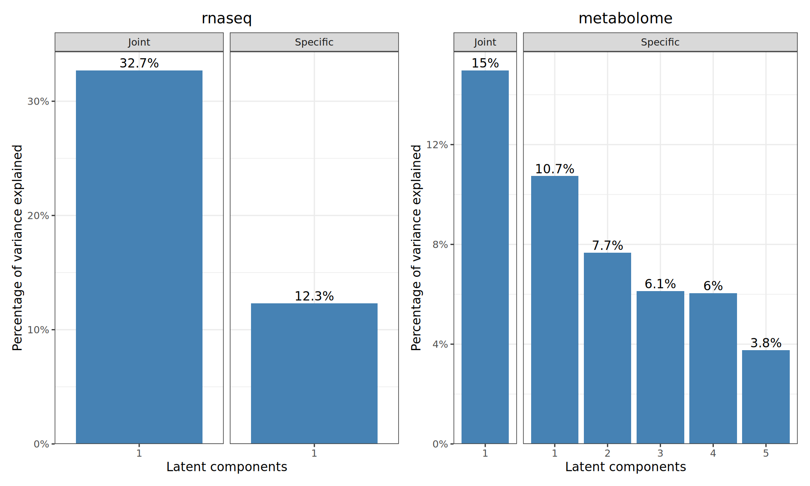
8.6.2 Relationship between the datasets’ joint components
As the joint components of the two datasets are related, we can compare the joint components’ sample scores obtained for each dataset. This can be visualised with the so2pls_compare_samples_joint_components() function. In the resulting plot, the samples can be coloured according to some information that we have about the samples. This is done by passing the MultiDataSet multi-omics object to the function through the mo_data argument, and choosing the column from the samples metadata information that will be used to colour the samples, through the colour_by argument. Note that if nothing is passed to these two arguments, all samples will have the same colour. In our case, we want to colour the samples according to their disease status, and show the feedlot with the shape of the points:
tar_load(mo_set_de)
so2pls_compare_samples_joint_components(
so2pls_final_run,
mo_data = mo_set_de,
colour_by = "status",
shape_by = "feedlot"
)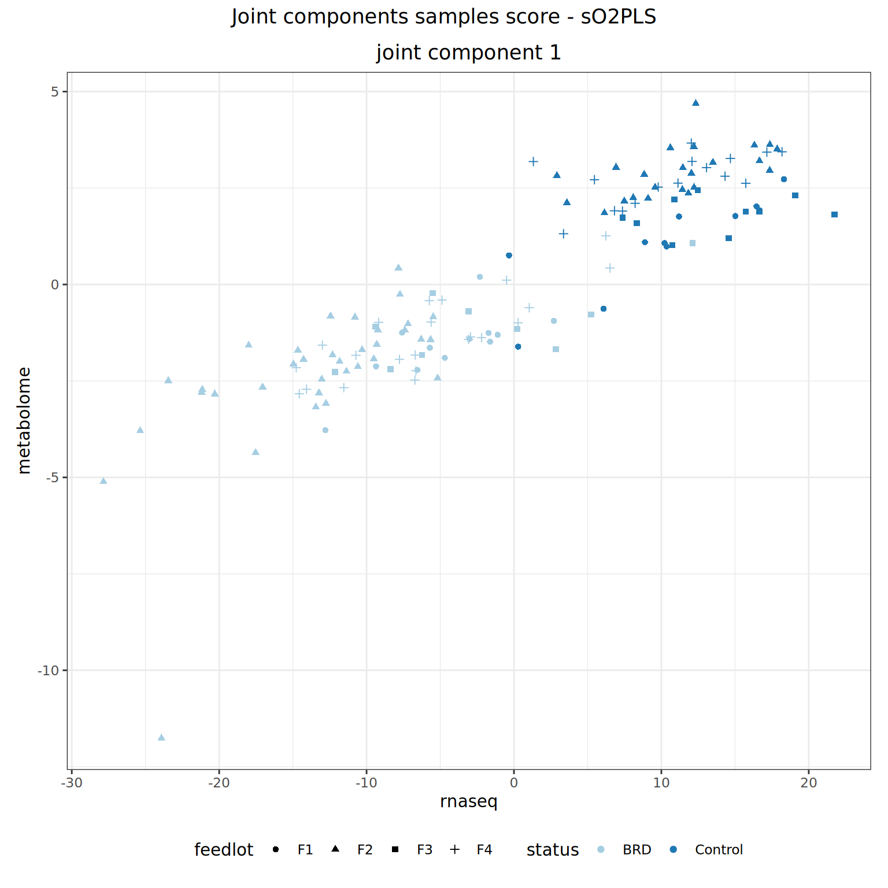
It seems that joint component 1 is pretty consistent between the two datasets, except for one individual (an infected animal from feedlot 2 seen on the bottom-left of the plot). For both datasets, this joint component clearly separates the control and infected animals.
Note that, since the function returns a patchwork of ggplots, it is possible to customise the colours used as follows:
so2pls_compare_samples_joint_components(
so2pls_final_run,
mo_data = tar_read(mo_set),
colour_by = "status",
shape_by = "feedlot"
) &
scale_colour_brewer(palette = "Set1")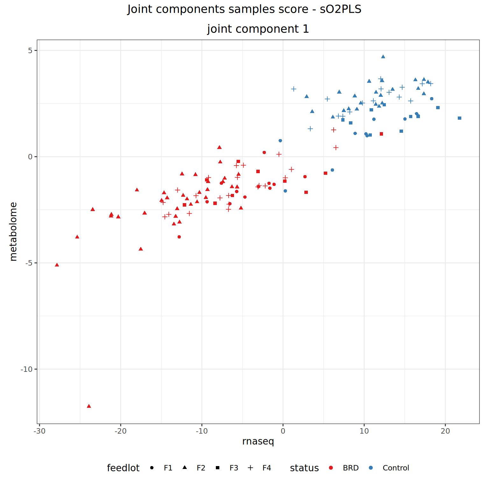
We can visualise precisely how the joint components from the two datasets are related. As it is possible to express each joint component of one dataset as a linear combination of the joint components of the other dataset, we can look at the coefficients of these linear combinations. This is the purpose of the so2pls_plot_joint_components_coefficients() function. In this case, since there is only one joint component, the visualisation is not particularly useful:
so2pls_plot_joint_components_coefficients(so2pls_final_run)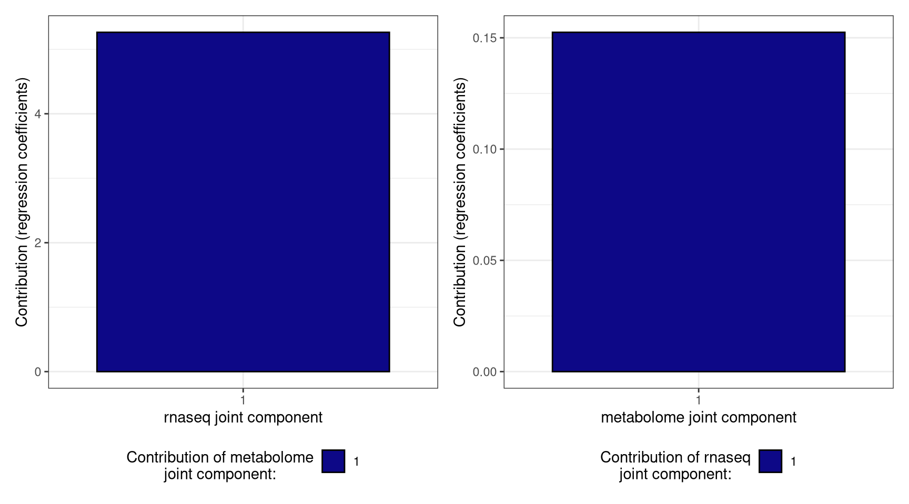
8.6.3 Samples plots
In Chapter 11, different visualisations implemented in moiraine are presented to show the samples in the space spanned by the latent components. However, since in sO2PLS there is a distinction between joint and specific latent components, some convenience functions have been implemented to generate such plots for all joint or all specific components at once.
First, we will focus on the joint components. The so2pls_plot_samples_joint_components() function represents the sample scores for the joint components as either violin plots (if there is only one joint component) or as a matrix of two-by-two scatter plots. Rather than displaying the sample scores separately for each dataset, it instead represents for each joint component the average of the sample scores across the two datasets. This function is based on the plot_samples_score() function (see Section 11.4), so information about the samples can be added to the plot by passing a MultiDataSet object to the function. Here, we want to visualise the samples’ health status as well as feedlot.
so2pls_plot_samples_joint_components(
so2pls_final_run,
mo_data = mo_set_de,
colour_upper = "status",
scale_colour_upper = scale_colour_brewer(palette = "Paired"),
shape_upper = "feedlot"
) +
theme(legend.box = "vertical")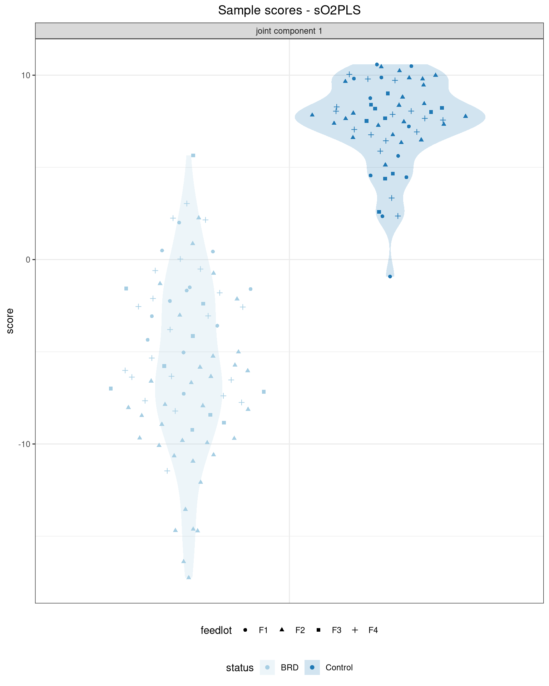
We can clearly see that joint component 1 separates most of the control from the infected animals. Note that the function returns a ggplot, which can be further customised.
Similarly, the so2pls_plot_samples_specific_components() function displays the sample scores for the specific components of each dataset. Contrary to the joint components, these specific sample scores plots are independent between the two datasets, and therefore the function returns a list of plots, one for each dataset. Again, the sample scores are represented either as a violin plot (if there is only one specific component), or as scatterplots (if there are more than one specific component). Samples metadata available in the MultiDataSet object can be used to colour the samples.
so2pls_plot_samples_specific_components(
so2pls_final_run,
mo_data = mo_set_de,
colour_upper = "feedlot",
scale_colour_upper = scale_colour_brewer(palette = "Paired"),
colour_lower = "rnaseq_batch",
shape_upper = "gender"
) |>
## customising legend for each plot
map(\(x) x + theme(legend.box = "vertical"))
#> Warning in plot_samples_score(method_output, ld_list[[.x]], ...): Only one
#> latent dimension to plot; 'colour_diag', 'colour_lower' and 'shape_lower'
#> argument will be ignored.
#> $rnaseq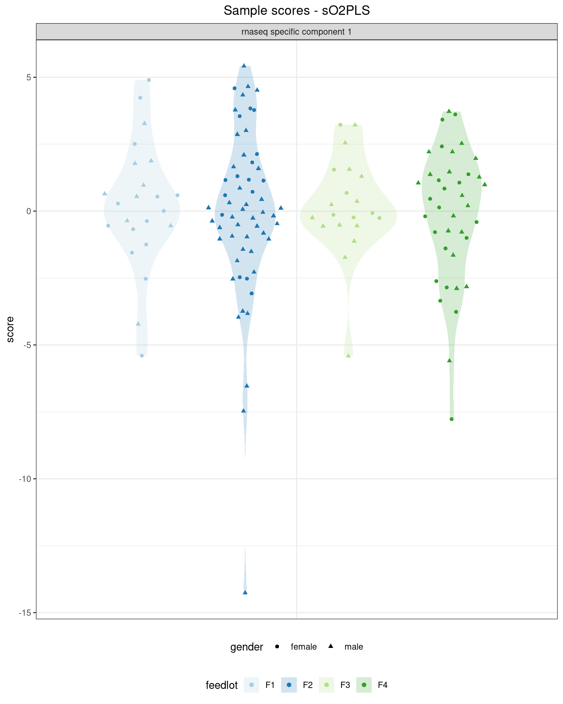
#>
#> $metabolome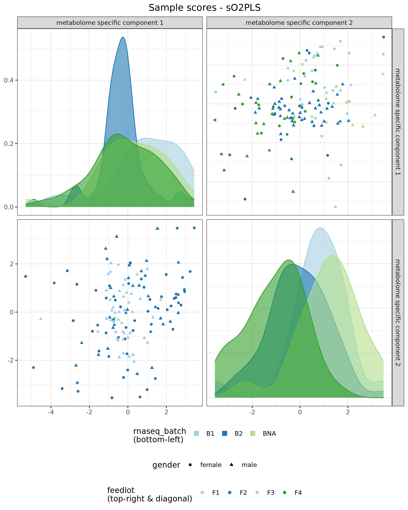
The transcriptomics specific components plots are harder to read as there are 8 of them, but it looks like for both datasets the specific components are not representing variation due to covariates such as gender or feedlot.
8.7 Recap – targets list
For convenience, here is the list of targets that we created in this section:
Targets list for sO2PLS analysis
list(
## Creating sO2PLS input
tar_target(
omicspls_input,
get_input_omicspls(
mo_presel_supervised,
datasets = c("rnaseq", "metabolome")
)
),
## Adjusted cross-validation for number of components
tar_target(
so2pls_cv_adj,
so2pls_crossval_o2m_adjR2(
omicspls_input,
a = 1:5,
ax = seq(0, 10, by = 2),
ay = seq(0, 10, by = 2),
nr_folds = 10,
nr_cores = 6,
seed = 127
)
),
tar_target(
so2pls_cv_adj_res,
so2pls_get_optim_ncomp_adj(so2pls_cv_adj)
),
## Plotting adjusted cross-validation results
tar_target(
so2pls_cv_adj_plot,
so2pls_plot_cv_adj(so2pls_cv_adj)
),
## Standard cross-validation for number of components
tar_target(
so2pls_cv,
so2pls_crossval_o2m(
omicspls_input,
so2pls_cv_adj,
nr_folds = 10,
nr_cores = 6,
seed = 356
)
),
tar_target(
so2pls_cv_res,
so2pls_get_optim_ncomp(so2pls_cv)
),
## Plotting standard cross-validation results
tar_target(
so2pls_cv_plot,
so2pls_plot_cv(so2pls_cv)
),
## Cross-validation for sparsity parameters
tar_target(
so2pls_cv_sparsity,
so2pls_crossval_sparsity(
omicspls_input,
n = so2pls_cv_res["n"],
nx = so2pls_cv_res["nx"],
ny = so2pls_cv_res["ny"],
nr_folds = 10,
keepx_seq = c(seq(5, 30, 5), seq(40, 100, 10)),
keepy_seq = c(seq(5, 40, 5))
)
),
tar_target(
so2pls_cv_sparsity_res,
so2pls_get_optim_keep(so2pls_cv_sparsity)
),
## Plotting the results of the cross-validation for the number of features
## to retain from each dataset for the different joint components
tar_target(
so2pls_cv_sparsity_plot,
so2pls_plot_cv_sparsity(so2pls_cv_sparsity)
),
## Extracting sparsity results in table format
tar_target(
so2pls_cv_sparsity_table,
so2pls_print_cv_sparsity(so2pls_cv_sparsity_res)
),
## Final sO2PLS run
tar_target(
so2pls_final_run,
so2pls_o2m(
omicspls_input,
so2pls_cv_res,
so2pls_cv_sparsity_res
)
),
## Summary plot of percentage of variance explained
tar_target(
so2pls_summary_plot,
so2pls_plot_summary(so2pls_final_run)
),
## Screeplot
tar_target(
so2pls_screeplot,
so2pls_screeplot(so2pls_final_run)
),
## Comparison of samples score for joint components
tar_target(
so2pls_joint_components_comparison_plot,
so2pls_compare_samples_joint_components(
so2pls_final_run,
mo_data = mo_set_de,
colour_by = "status",
shape_by = "feedlot"
)
),
## Coefficient plot for joint components
tar_target(
so2pls_joint_components_coefficients_plot,
so2pls_plot_joint_components_coefficients(so2pls_final_run)
),
## Joint component samples score plot
tar_target(
so2pls_joint_components_samples_score_plot,
so2pls_plot_samples_joint_components(
so2pls_final_run,
mo_data = mo_set_de,
colour_upper = "status",
scale_colour_upper = scale_colour_brewer(palette = "Paired"),
shape_upper = "feedlot"
) +
theme(legend.box = "vertical")
),
## Specific components samples score plot
tar_target(
so2pls_specific_components_samples_score_plot,
so2pls_plot_samples_specific_components(
so2pls_final_run,
mo_data = mo_set_de,
colour_upper = "feedlot",
scale_colour_upper = scale_colour_brewer(palette = "Paired"),
colour_lower = "rnaseq_batch",
shape_upper = "gender"
) |>
map(\(x) x + theme(legend.box = "vertical"))
)
)i.e. the prediction of the joint part of each dataset given the joint part of the other dataset.↩︎